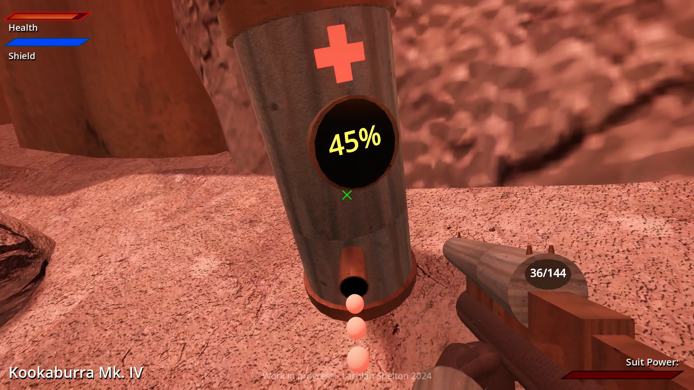
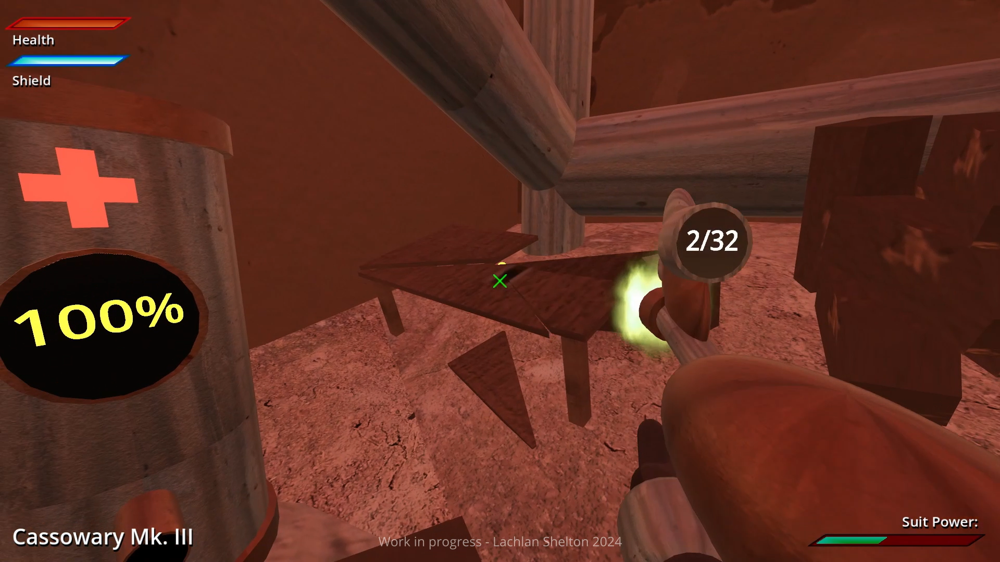
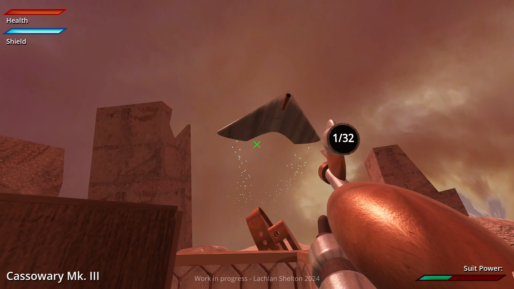
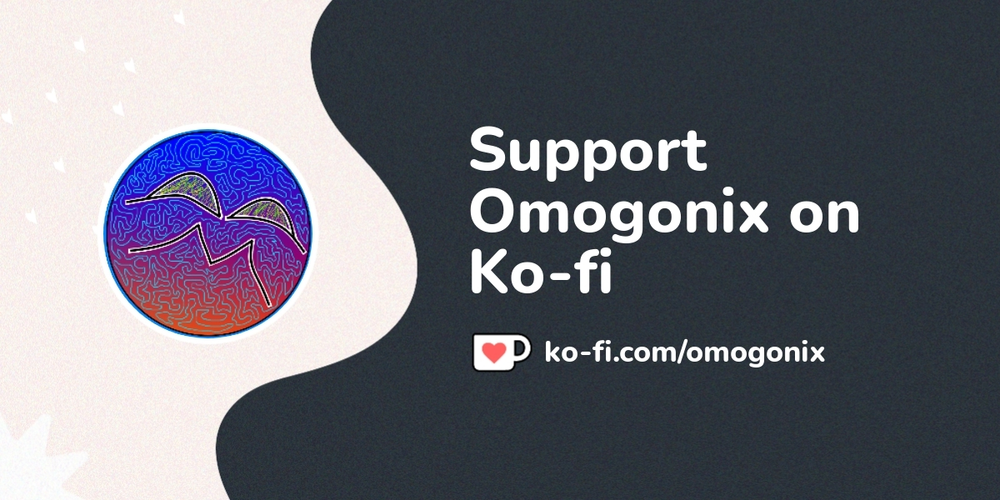

Earth is already screwed. You're only preventing the inevitable.
Acerbus Diluculo is a first-person shooter game being developed for Windows PCs in the Godot Engine by Lachlan Shelton (AKA Omogonix).
Go on an adventure in an alternate future where humanity is at the brink of extinction. An inter-galactic alien empire have been foraging Earth of all its resources for just over 10 years. The seas are drained, the air is toxic, and wild-life has become mutated to suit the harsher environment. As humanity enters its final chapter, you're placed in an unfortunate situation which leads to you finding your true purpose.
The player will get to use a variety of weapons on their adventure. Each weapon has their own unique abilities and characteristics.
___
The player must manage their resources wisely in order to survive. Make smart use of your health, shields, ammo, suit power, and gas mask filter power in order to survive the harsh environment of Earth.
___
Whether you're causing destruction to elements of the environment, moving around objects, or doing puzzles, physics will play an important role in the player's adventure.
___
The player will encounter a variety of enemies and threats throughout their adventure. Whether you're fighting the mutated creatures of the wasteland or the very aliens that oppress you, you'll need to be alert and ready to fight.
___
STEX23 is providing a soundtrack that perfectly fits the atmosphere of the game.
___
Acerbus Diluculo is still in development. Any media or information shared about the game is still a work in progress until the game is declared fully completed. More information about the game will be revealed when the time is right. I've been sharing development progress on a few of my social medias, so if you're interested in keeping up to date with development, consider checking out the links at the top or bottom of the page.
___
If you'd like to show further support towards the game, considering donating to me on Ko-fi! It's not needed at all, development of the game will still continue on. It's just an extra way to show your support if you'd like to. Any person who donates starting from November 1st, 2024 will have their name in the credits of the game under a special section.
___